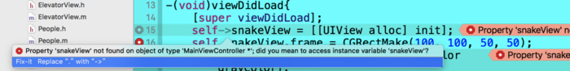

在 iOS5 更新之后苹果建议以如下的方式来声明变量:
@interface MainViewController : UIViewController
@property (nonatomic,strong) UIView *snakeView;
@end
这也是大多数新手 iOS 程序员最熟悉的方式.但是在阅读许多老手程序员写的代码的时候会疑惑如下这种方式的写法:
@implementation MainViewController{
UIView *snakeView;
}
@synthesize snakeView;
下面我将解释一下各种写法的来历.
Class 中的属性 property
在最初的时候我们必须同时为输出口声明属性和底层实例变量,例如:
@interface MainViewController : UIViewController{
UIView *snakeView;
}
@property (nonatomic,strong) UIView *snakeView;
后来苹果将默认编译器从 GCC 转换为 LLVM(low level virtual machine),从此不再需要为属性声明实例变量了.如果 LLVM 发现一个没有匹配实例变量的属性,他将自动创建一个与属性匹配的以下划线为开头的实例变量.也就是我们文章开头所有人都熟悉的写法. 例:
@interface MainViewController : UIViewController
@property (nonatomic,strong) UIView *snakeView;
@end
在 MainViewController.m 文件中,编译器会自动生成一个实例变量 _snakeView.那么在 .m 文件中我们就可以直接使用 _snakeView 实例变量,或者通过属性 self.snakeView.这两种方法都是一样的. 有一点需要注意的是使用 self.snakeView 这种方法本质上是调用的 snakeView 属性的 setter/getter 方法. 例如:
@interface MainViewController : UIViewController{
UIView*snakeView;
}
在 .m 中调用 self.snakeView 就是错误的. Xcode 会提示你:
 将self.snakeView替换为self->snakeView
因为 OC 中点语法本质上是调用 setter/getter 方法,而上面的代码中并没有 snakeView 的这个方法.(如果点表达式出现在等号 ＝ 左边，该属性名称的setter方法将被调用。如果点表达式出现在右边，该属性名称的getter方法将被调用).
iOS5 更新之后,苹果提倡使用只写属性的方式.这时编译器会根据你声明的属性自动为你生成带下划线的实例变量,并且不需要写 @synthesis 就可自动生成 getter/setter 方法.(@synthesize的作用就是让编译器为你自动生成setter与getter方法).
@synthesize 还有一个作用，可以指定与属性对应的实例变量，例如 @synthesize snakeView = xxx；那么 self.snakeView 其实是操作的实例变量 xxx，而不是 _snakeView了。
在项目中我们会这样在 .m 中写:
@synthesize snakeView;
这样写了之后,那么编译器会自动生成 snakeView 的实例变量,以及相应的 getter/setter 方法.需要注意的是,此时 _snakeView 是不存在的.因为自动生成的实例变量为snakeView 而不是 _snakeView .所以现在 @synthesize 的作用相当于指定实例变量.
如果 .m 中写了 @synthesize snakeView; 那么生成的实例变量就是 snakeView;如果没写@synthesize snakeView;那么生成的就是 _snakeView.
类别中的属性@property
类与类别中的属性要区分开来,因为类别中只能添加属性而不能添加实例变量.经常会在 iOS 代码中看到在类别中添加属性,这种情况下是不会生成实例变量的,只是生成的 getter/setter 方法.
注意一点，匿名类别(匿名扩展)是可以添加实例变量的，非匿名类别是不能添加实例变量的，只能添加方法，或者属性（其实也是方法）。
成员变量/实例变量/属性变量的关系
@interface MainViewController : UIViewController{
UIView*snakeView;
int count;
id data;
}
在{ } 中所声明的变量都为成员变量。 所以yourButton、count、data都是成员变量。既然如此，实例变量又是什么意思呢？
实例变量本质上就是成员变量，只是实例是针对类而言，实例是指类的声明。{ }中的yourButton就是实例变量。id 是OC特有的类，本质上讲id等同于（void *）。所以id data属于实例变量。
实例变量+基本数据类型变量=成员变量
成员变量用于类内部，无需与外界接触的变量。因为成员变量不会生成set、get方法，所以外界无法与成员变量接触。根据成员变量的私有性，为了方便访问，所以就有了属性变量。属性变量的好处就是允许让其他对象访问到该变量（因为属性创建过程中自动产生了set 和get方法）。当然，你可以设置只读或者可写等，设置方法也可自定义。所以，属性变量是用于与其他对象交互的变量。
综上所述可知：成员变量是定义在｛｝号中的变量，如果变量的数据类型是一个类则称这个变量为实例变量。因为实例变量是成员变量的一种特殊情况，所以实例变量也是类内部使用的，无需与外部接触的变量，这个也就是所谓的类私有变量。而属性变量是用于与其他对象交互的变量。
但是，现在大家似乎都不怎么喜欢用成员变量来定义类的变量，都喜欢用属性变量来定义类的变量。把需要与外部接触的变量定义在.h文件中，只在本类中使用的变量定义在.m文件中。
总结:
1.成员变量用于类内部,无需与外界接触.
2.根据成员变量的私有性,为了方便访问就有了属性变量.属性变量的好处就是可以让其他对象访问到该变量.当然也可以设置属性变量的只读只写,设置方法也可自定义.所以,属性变量是与外界交互的变量.
如果只是单纯的 private 变量,最好声明在 implementation 中.
如果是类的 public 属性,就用 property 写在 .h 中.
如果需要在 .m 文件中用 getter/setter 方法实现一些东西,就在 .m 文件的类目里用 property 来声明
.h .m 中 interface 的大括号{}之间的实例变量,可以在 .m 中直接使用.
property 属性, .m 中需要使用 self.propertyVariable 的方式使用 propertyVariable.